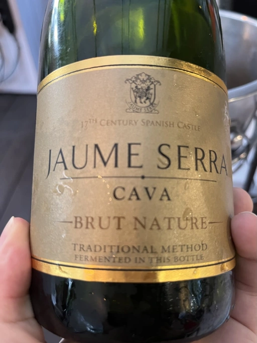

- Type
- White Sparkling, Brut nature
- Producer
- Jaume Serra
- Vintage
- NV
- Location
- Spain, Penedès DO
- Grapes
- Xarel-lo, Parellada, Macabeo
- Alcohol
- 12
- Sugar
- 1.5
- Price
- 239 UAH, 200 UAH
- Cellar
- N/A
Ratings
2021-02-19 - 6.50
Mediocre Cava, yet typical and fresh. Apples ‘n’ plastic. Good QPR.
2022-06-14 - 6.50
Intense and typical bouquet full of fruits and secondary notes. Ah yes, the classical apple in a plastic wrapping. Easy going, not demanding, pretty good company to fish. I mean, cooked fish.